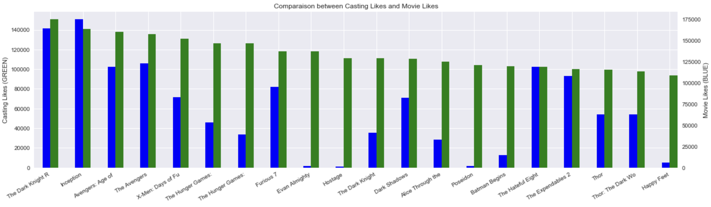

Chapter 01 - Exploratory Visualization
Libraries & System Setup
 Library
Library
LibraryIn [49]:
import json
import urllib
import pandas as pd
import imp
import numpy as np
import seaborn as sns
from tqdm import tqdm
import math
from sklearn.preprocessing import Imputer
from sklearn import ensemble
from sklearn import linear_model
from sklearn.model_selection import train_test_split
from sklearn.cross_validation import cross_val_score
from PIL import Image
import matplotlib.pyplot as plt
import imdb_movie_content
from collections import Counter
%matplotlib inline
imp.reload(parser)
imp.reload(imdb_movie_content)
Out[49]:
<module 'imdb_movie_content' from '/Users/alexandreattia/Desktop/Work/Practice/HackerRankChallenge/KaggleMovieRating/imdb_movie_content.py'>
In [35]:
df = parser.create_dataframe("movie_contents.json", "movie_budget.json")
df.set_index('movie_title', inplace=True, drop=False)
df.sort_index(inplace=True)
awards_columns = [col for col in df.columns if 'nominated' in col or 'won' in col]
df_awards = df[awards_columns]
awards_per_movie = (len(awards_columns) - df_awards.isnull().sum(axis=1)).to_dict()
df['nb_awards'] = df['movie_title'].map(awards_per_movie)
df = df.drop_duplicates(['movie_title'])
df = df.rename(columns = {'director_fb_links': 'director_fb_likes'})
Awards and Gross
In [3]:
d = df['nb_awards'].sort_values(ascending=False)[:15]
plt.figure(figsize=(20,5))
plot = sns.barplot(x=d.index, y=d)
_ = plot.set_xticklabels([elem[:17] for elem in d.index], rotation=15)
_ = plot.set_title('Most awarded (won and nominated) movies')
_ = plot.set_ylabel('Number of awards')
Out[3]:
In [4]:
d = df.worldwide_gross.sort_values(ascending=False)[:17]
plt.figure(figsize=(20,5))
plot = sns.barplot(x=d.index, y=d)
_ = plot.set_xticklabels([elem[:20] for elem in d.index], rotation=15)
_ = plot.set_title('Most prolific movies')
_ = plot.set_ylabel('Gross (B$)')
Out[4]:
In [885]:
sns.set()
d = df.worldwide_gross.sort_values(ascending=False)[:20]
e = df_awards[df_awards.index.isin(d.index)].isnull().sum(axis=1)
e = len(awards_columns) - e[~e.index.duplicated(keep='first')].reindex(d.index)
margin = 0.05
width = 4*(1.-2.*margin)/15
fig = plt.figure(figsize=(20,5))
ax = fig.add_subplot(111)
ax2 = ax.twinx()
d.plot(kind='bar', color='green', ax=ax, width=width, position=0)
e.plot(kind='bar', color='blue', ax=ax2, width=width, position=1)
ax.set_ylabel('Worldwide Gross (GREEN)')
ax2.set_ylabel('Awards (BLUE)')
ax.set_xlabel('')
ax.set_title('Comparaison between Worldwide Gross and Awards')
_ = ax.set_xticklabels([elem[:17] for elem in d.index], rotation = 30, ha='right')
ax2.grid(False)
Out[885]:
Facebook likes
In [888]:
d = df['total_cast_fb_likes'].sort_values(ascending=False)[:15]
e = df[df.index.isin(d.index)].num_facebook_like
plt.figure(figsize=(20,5))
plot = sns.barplot(x=d.index, y=d)
_ = plot.set_xticklabels([elem[:17] for elem in d.index], rotation=15)
_ = plot.set_title('Movies with the most "famous" casting')
_ = plot.set_ylabel('Total Facebook Likes (casting + director)')
Out[888]:
In [548]:
sns.set()
d = df['total_cast_fb_likes'].sort_values(ascending=False)[:20]
e = df[df.index.isin(d.index)].num_facebook_like.reindex(d.index)
margin = 0.05
width = 4*(1.-2.*margin)/15
fig = plt.figure(figsize=(20,5))
ax = fig.add_subplot(111)
ax2 = ax.twinx()
d.plot(kind='bar', color='green', ax=ax, width=width, position=0)
e.plot(kind='bar', color='blue', ax=ax2, width=width, position=1)
ax.set_ylabel('Casting Likes (GREEN)')
ax2.set_ylabel('Movie Likes (BLUE)')
ax.set_xlabel('')
ax.set_title('Comparaison between Casting Likes and Movie Likes')
_ = ax.set_xticklabels([elem[:17] for elem in d.index], rotation = 30, ha='right')
ax2.grid(False)
Out[548]:

Chapter 02 - Data Cleaning
Best Actors
Actor in movie
In [5]:
all_actors = [actor for actor in list(set(list(df.actor_1_name) + list(df.actor_2_name) + list(df.actor_3_name))) if pd.notnull(actor)]
imdb_score_per_actor = {}
for actor in all_actors:
imdb_score_per_actor[actor] = df[(df.actor_1_name == actor) | (df.actor_2_name == actor) | (df.
actor_3_name == actor)].idmb_score.mean()
In [6]:
millnames = ['',' K',' M',' B']
def millify(n):
if pd.notnull(n):
n = float(n)
millidx = max(0,min(len(millnames)-1,
int(math.floor(0 if n == 0 else math.log10(abs(n))/3))))
return '{:.1f}{}'.format(n / 10**(3 * millidx), millnames[millidx])
else:
return n
In [7]:
gross_per_actor = {}
for actor in all_actors:
gross_per_actor[actor] = df[(df.actor_1_name == actor) | (df.actor_2_name == actor) | (df.actor_3_name == actor)].worldwide_gross.mean()
In [9]:
mini_movie = 3
top_k = 3
best_mini_gross = sorted([(k,v) for k,v in sorted(gross_per_actor.items(), key=lambda x:x[1], reverse=True) if len(df[(df.actor_1_name == k)
| (df.actor_2_name == k)
| (df.actor_3_name == k)]) >= mini_movie], key=lambda x:x[1], reverse=True)[:20]
best_mini_gross_str = [elem[0]+ ', %s (%s movie.s)' % (millify(elem[1]),len(df[(df.actor_1_name == elem[0])
| (df.actor_2_name == elem[0])
| (df.actor_3_name == elem[0])])) for elem in best_mini_gross][:top_k]
best_mini = [(k,v) for k,v in sorted(imdb_score_per_actor.items(), key=lambda x:x[1], reverse=True) if len(df[(df.actor_1_name == k)
| (df.actor_2_name == k)
| (df.actor_3_name == k)]) >= mini_movie][:20]
best_mini_str = [elem[0]+ ', %s (%s movie.s)' % (round(elem[1], 2),len(df[(df.actor_1_name == elem[0])
| (df.actor_2_name == elem[0])
| (df.actor_3_name == elem[0])])) for elem in best_mini][:top_k]
In [10]:
print('The {} best actors are (with minimum {} movies) : \n{}'.format(top_k, mini_movie,
'\n'.join(best_mini_str)))
print('\nThe {} most prolific actors are (with minimum {} movies) : \n{}'.format(top_k, mini_movie,
'\n'.join(best_mini_gross_str)))
The 3 best actors are (with minimum 3 movies) :
Mark Hamill, 8.63 (3 movie.s)
Michael Biehn, 8.0 (3 movie.s)
Cate Blanchett, 7.82 (8 movie.s)
The 3 most prolific actors are (with minimum 3 movies) :
Richard Armitage, 825.8 M (4 movie.s)
Rupert Grint, 701.6 M (5 movie.s)
Orlando Bloom, 682.8 M (7 movie.s)}}}
Output verification
 Table
Table
TableIn [11]:
plt.figure(figsize=(23,5))
plot = sns.barplot([elem[0] for elem in best_mini], [elem[1] for elem in best_mini])
_ = plot.set_xticklabels([elem[0] for elem in best_mini], rotation=15)
_ = plot.set_title('Most beneficial (IMDB score) actors')
_ = plot.set_ylabel('IMDB score')
Out[11]:
In [12]:
plt.figure(figsize=(23,5))
plot = sns.barplot([elem[0] for elem in best_mini_gross], [elem[1] for elem in best_mini_gross])
_ = plot.set_xticklabels([elem[0] for elem in best_mini_gross], rotation=15)
_ = plot.set_title('Most prolific actors')
_ = plot.set_ylabel('Worldwide gross')
Out[548]:
Transformation and Visual Inspection
Table
Table
Table
TableFirst star in movie
In [553]:
big_star = df.groupby(['actor_1_name'])['idmb_score', 'worldwide_gross'].mean().sort_values(['idmb_score', 'worldwide_gross'], ascending=False)
big_star['nb_movies'] = big_star.index
big_star['nb_movies'] = big_star['nb_movies'].map(df.groupby(['actor_1_name'])['movie_title'].count().to_dict())
big_star['worldwide_gross'] = big_star['worldwide_gross'].apply(millify)
top_k = 7
print('The {} best actors as most famous actor are :'.format(top_k))
big_star[big_star.nb_movies >= 3].head(top_k)
The 7 best actors as most famous actor are :
Out[553]:
| idmb_score | worldwide_gross | nb_movies | |
|---|---|---|---|
| actor_1_name | |||
| Leonardo DiCaprio | 8.122222 | 398.5 M | 9 |
| Matthew McConaughey | 7.800000 | 255.5 M | 3 |
| Tom Hanks | 7.787500 | 411.4 M | 8 |
| Richard Armitage | 7.733333 | 977.5 M | 3 |
| Christopher Lee | 7.475000 | 557.7 M | 4 |
| Daniel Craig | 7.400000 | 422.9 M | 4 |
| Tom Hardy | 7.350000 | 403.9 M | 4 |
In [521]:
big_star = df.groupby(['actor_1_name'])['idmb_score', 'worldwide_gross'].mean().sort_values(['worldwide_gross', 'idmb_score'], ascending=False)
big_star['nb_movies'] = big_star.index
big_star['nb_movies'] = big_star['nb_movies'].map(df.groupby(['actor_1_name'])['movie_title'].count().to_dict())
big_star['worldwide_gross'] = big_star['worldwide_gross'].apply(millify)
top_k = 7
print('The {} most prolific actors as most famous actor are :'.format(top_k))
big_star[big_star.nb_movies >= 3].head(top_k)
The 7 most prolific actors as most famous actor are :
Out[521]:
| idmb_score | worldwide_gross | nb_movies | |
|---|---|---|---|
| actor_1_name | |||
| Richard Armitage | 7.733333 | 977.5 M | 3 |
| Robert Pattinson | 5.675000 | 763.5 M | 4 |
| Chris Hemsworth | 7.083333 | 751.6 M | 6 |
| Jennifer Lawrence | 7.200000 | 621.7 M | 8 |
| J.K. Simmons | 6.925000 | 605.8 M | 8 |
| Angelina Jolie | 7.075000 | 586.5 M | 4 |
| Henry Cavill | 6.600000 | 582.6 M | 3 |
IMDB rating and other variables
In [249]:
d = df['idmb_score'].apply(float).sort_values(ascending=False)[:12]
e = df[df.index.isin(d.index)].num_facebook_like.reindex(d.index)
f = df[df.index.isin(d.index)].worldwide_gross.reindex(d.index)
margin = 0.05
width = 4*(1.-2.*margin)/15
fig = plt.figure(figsize=(20,5))
ax = fig.add_subplot(111)
ax2 = ax.twinx()
ax3= ax2.twinx()
d.plot(kind='bar', color='green', ax=ax, width=width, position=0)
e.plot(kind='bar', color='blue', ax=ax2, width=width, position=1)
f.plot(kind='bar', color='purple', ax=ax3, width=width, position=2)
ax.set_ylabel('IMDB Score (GREEN)')
ax2.set_ylabel('Movie Likes(BLUE) and Gross(PURPLE)')
ax3.set_yticklabels('')
ax2.set_yticklabels('')
ax.set_xlabel('')
_ = ax.set_xticklabels([elem[:17] for elem in d.index], rotation = 30, ha='right')
ax3.grid(False)
ax2.grid(False)
ax.set_title('Gross and Movie Likes compared to IMDB score')
Out[249]:
Out[548]:
In [14]:
# Correlation Matrix
corr = df[['nb_awards', 'domestic_gross','worldwide_gross',
'total_cast_fb_likes','director_fb_likes', 'production_budget',
'num_critic_for_reviews', 'idmb_score', 'actor_1_fb_likes', 'actor_2_fb_likes', 'actor_3_fb_likes']].corr()
plt.figure(figsize=(8,8))
sns.heatmap(corr, mask=np.zeros_like(corr, dtype=np.bool), cmap=sns.diverging_palette(250, 10, as_cmap=True),
square=True)
plt.title('Correlation matrix for 7 variables and the IMDB Score')
corr
Out[14]:
| nb_awards | domestic_gross | worldwide_gross | total_cast_fb_likes | director_fb_likes | production_budget | num_critic_for_reviews | idmb_score | actor_1_fb_likes | actor_2_fb_likes | actor_3_fb_likes | |
|---|---|---|---|---|---|---|---|---|---|---|---|
| nb_awards | 1.000000 | 0.256910 | 0.232643 | 0.129949 | 0.256985 | 0.046063 | 0.261310 | 0.413660 | 0.041738 | 0.161491 | 0.147963 |
| domestic_gross | 0.256910 | 1.000000 | 0.935842 | 0.277702 | 0.176098 | 0.649957 | 0.483601 | 0.263081 | 0.079222 | 0.324051 | 0.368906 |
| worldwide_gross | 0.232643 | 0.935842 | 1.000000 | 0.277677 | 0.164262 | 0.724943 | 0.517116 | 0.245807 | 0.066839 | 0.339250 | 0.396354 |
| total_cast_fb_likes | 0.129949 | 0.277702 | 0.277677 | 1.000000 | 0.280496 | 0.305823 | 0.360474 | 0.218539 | 0.873110 | 0.632069 | 0.641536 |
| director_fb_likes | 0.256985 | 0.176098 | 0.164262 | 0.280496 | 1.000000 | 0.128954 | 0.243488 | 0.264821 | 0.069803 | 0.204641 | 0.249485 |
| production_budget | 0.046063 | 0.649957 | 0.724943 | 0.305823 | 0.128954 | 1.000000 | 0.489272 | 0.087965 | 0.096173 | 0.367139 | 0.419698 |
| num_critic_for_reviews | 0.261310 | 0.483601 | 0.517116 | 0.360474 | 0.243488 | 0.489272 | 1.000000 | 0.346106 | 0.126010 | 0.451665 | 0.469634 |
| idmb_score | 0.413660 | 0.263081 | 0.245807 | 0.218539 | 0.264821 | 0.087965 | 0.346106 | 1.000000 | 0.101598 | 0.230435 | 0.232669 |
| actor_1_fb_likes | 0.041738 | 0.079222 | 0.066839 | 0.873110 | 0.069803 | 0.096173 | 0.126010 | 0.101598 | 1.000000 | 0.284472 | 0.250632 |
| actor_2_fb_likes | 0.161491 | 0.324051 | 0.339250 | 0.632069 | 0.204641 | 0.367139 | 0.451665 | 0.230435 | 0.284472 | 1.000000 | 0.815911 |
| actor_3_fb_likes | 0.147963 | 0.368906 | 0.396354 | 0.641536 | 0.249485 | 0.419698 | 0.469634 | 0.232669 | 0.250632 | 0.815911 | 1.000000 |
Out[548]:
Genres
Initial wrangling and data generation
Table
 Data
Data
DataIn [15]:
with open('genre.json', 'r') as f:
genres = json.load(f)
In [16]:
imdb_score_per_genre = {}
gross_per_genre = {}
genre_columns = [col for col in df.columns if 'genre_' in col]
df_genres = df[genre_columns]
for genre, value in genres.items():
mask = np.column_stack([df_genres[col] == value for col in df_genres])
df_specific_genre = df.loc[mask.any(axis=1)][['genres', 'idmb_score', 'worldwide_gross']]
imdb_score_per_genre[genre] = df_specific_genre.idmb_score.mean()
gross_per_genre[genre] = df_specific_genre.worldwide_gross.mean()
gross_per_genre = {k:v for k,v in gross_per_genre.items() if pd.notnull(v)}
In [17]:
top_k = 5
print('The {} best genres (in terms of IMDB score) are : \n{}'.format(top_k,
'\n'.join(['%s (%s)' % (elem[0], round(elem[1], 1)) for elem in sorted(imdb_score_per_genre.items(), key=lambda x:x[1], reverse=True)][:top_k])))
print('\nThe {} most prolific genres are : \n{}'.format(top_k,
'\n'.join(['%s (%s)' % (elem[0], millify(elem[1])) for elem in sorted(gross_per_genre.items(), key=lambda x:x[1], reverse=True)][:top_k])))
The 5 best genres (in terms of IMDB score) are :
Biography (7.2)
History (7.1)
Drama (7.0)
Mystery (7.0)
War (7.0)
The 5 most prolific genres are :
Fantasy (457.7 M)
Adventure (454.7 M)
Animation (441.1 M)
Sci-Fi (433.0 M)
Musical (425.0 M)
In [18]:
margin = 0.05
width = 4*(1.-2.*margin)/15
fig = plt.figure(figsize=(20,5))
ax = fig.add_subplot(111)
ax2 = ax.twinx()
df_combine = pd.concat([pd.Series(gross_per_genre), pd.Series(imdb_score_per_genre)], axis=1)
df_combine = df_combine.sort_values(1, ascending=False)
df_combine.columns = ['Gross', 'Score']
df_combine.Gross.plot(kind='bar', color='green', ax=ax, width=width, position=0)
df_combine.Score.plot(kind='bar', color='blue', ax=ax2, width=width, position=1)
ax.set_ylabel('Worldwide Gross in M$ (green)')
ax2.set_ylabel('IMDB Score (blue)')
ax.set_xlabel('')
ax.set_title('Comparaison between Worldwide Gross and IMDB score per genre')
_ = ax.set_xticklabels(pd.Series(imdb_score_per_genre).index, rotation = 30)
ax2.grid(False)
Out[548]:
Chapter 03 - Modeling and Evaluation
Prediction
Preprocessing
In [36]:
## Fill NA for genres
df.genres = df.genres.fillna('')
## Mean Inputer
col_to_impute = ['actor_1_fb_likes', 'actor_2_fb_likes', 'actor_3_fb_likes',
'domestic_gross', 'duration_sec', 'num_critic_for_reviews', 'num_facebook_like', 'num_user_for_reviews',
'production_budget', 'total_cast_fb_likes', 'worldwide_gross', 'director_fb_likes']
for col in col_to_impute:
column = np.array(df[col]).reshape(1, -1)
imp = Imputer(missing_values='NaN', strategy='mean', axis=1)
df[col] = imp.fit_transform(column)[0]
In [37]:
numerical_cols = list(df.dtypes[df.dtypes != 'object'].index)
not_wanted_cols = ['title_year', 'storyline', 'release_date', 'image_urls', 'movie_title', 'keywords', 'movie_imdb_link', 'num_voted_users'] + genre_columns
df.country = df.country.apply(lambda x:x.split('|'))
df.language = df.language.apply(lambda x:x.split('|'))
list_cols = ['country', 'genres', 'language']
cols_to_transform = [cols for cols in df.columns if cols not in numerical_cols + not_wanted_cols + list_cols]
df2 = df[cols_to_transform]
In [38]:
## Dummies for columns with list
df_col_list = pd.DataFrame()
for col in list_cols:
df_col_list = pd.concat([df_col_list, pd.get_dummies(df[col].apply(pd.Series).stack()).sum(level=0)], axis=1)
In [39]:
## Dummies for columns with string
df_col_string = pd.get_dummies(df2, columns=cols_to_transform)
IIn [40]:
X_raw = pd.concat([df[numerical_cols], df_col_string, df_col_list], axis=1)
print('Columns dtypes :', Counter(X_raw.dtypes))
Columns dtypes : Counter({dtype('uint8'): 13004, dtype('float64'): 13, dtype('int64'): 1})
In [41]:
y = list(X_raw.idmb_score)
X = X_raw.drop('idmb_score', axis=1)
In [42]:
X_train, X_test, Y_train, Y_test = train_test_split(
X, y, test_size=0.20, random_state=42)
print('Train', X_train.shape, 'Test', X_test.shape)
Train (4089, 13017) Test (1023, 13017)
Choosing ML algorithm
In [696]:
gbr = ensemble.GradientBoostingRegressor(n_estimators=1000)
gbr.fit(X_train,Y_train)
print ("Training Score GradientBoosting: ", str(gbr.score(X_train,Y_train)))
print ("Test Score GradientBoosting: " , str(gbr.score(X_test,Y_test)))
Training Score GradientBoosting: 0.965677058186
Test Score GradientBoosting: 0.445847202544
In [748]:
abr = ensemble.AdaBoostRegressor(n_estimators=10, learning_rate=0.4, loss='linear')
abr.fit(X_train,Y_train)
print ("Training Score AdaBoostRegressor: ", str(abr.score(X_train,Y_train)))
print ("Test Score AdaBoostRegressor: " , str(abr.score(X_test,Y_test)))
Training Score AdaBoostRegressor: 0.497750738605
Test Score AdaBoostRegressor: 0.450030379927
In [765]:
rf=ensemble.RandomForestRegressor(n_estimators=500,oob_score=True, )
rf.fit(X,y)
print ("Training Score RandomForest: ", str(rf.score(X,y)))
print ("Cross Validation (10 fold) Score: " , np.mean(cross_val_score(rf, X_train, Y_train, cv=10)))
Training Score RandomForest: 0.933556405649 OOB Score RandomForest: 0.514455022206
Tuning
Parameter Tuning
Table
Cross Validation to choose n_estimators
In [45]:
rfs = {}
for k in [10, 20, 50, 70, 100, 120, 150, 200]:
rf=ensemble.RandomForestRegressor(n_estimators=k, oob_score=True)
rf.fit(X,y)
rfs[k] = np.mean(cross_val_score(rf, X_train, Y_train, cv=5))
In [44]:
x_plot = list(rfs.keys())
y_plot = list(rfs.values())
f, ax = plt.subplots()
ax.scatter(x_plot, y_plot)
ax.set_title('Variation of the Cross Validation score in function of the number of estimators')
ax.set_xlabel('Number of estimators')
ax.set_ylabel('Cross Validation score')
Out[44]:
<matplotlib.text.Text at 0x111e98550>
Out[44]:
Min leaf
Min leaf¶
In [66]:
rfs2 = {}
for k in tqdm(list(range(1, 11, 2))+list(range(11,25,4))):
rf = ensemble.RandomForestRegressor(n_estimators=120, oob_score=True, min_samples_leaf=k)
rf.fit(X,y)
rfs2[k] = rf.oob_score_
100%|| 9/9 [20:01<00:00, 131.78s/it]
In [69]:
x_plot = list(rfs2.keys())
y_plot = list(rfs2.values())
f, ax = plt.subplots()
ax.scatter(x_plot, y_plot)
ax.set_title('Variation of the Cross Validation score in function of the minimum of sample per leaf')
ax.set_xlabel('Minimum of Samples per leaf')
ax.set_ylabel('OOB score')
Out[69]:
<matplotlib.text.Text at 0x13a3feac8>
max_features
In [61]:
rfs2 = {}
for k in ["log2", "auto", "sqrt", 0.2, 0.1, 0.3] :
rf = ensemble.RandomForestRegressor(n_estimators=120, oob_score=True, min_samples_leaf= 1, max_features = k)
rf.fit(X,y)
rfs2[k] = rf.oob_score_
In [62]:
x_plot = range(len(rfs2))# list(rfs2.keys())
y_plot = list(rfs2.values())
print(list(rfs2.keys()))
f, ax = plt.subplots()
ax.scatter(x_plot, y_plot)
ax.set_title('Variation of the Cross Validation score in function of the minimum of sample per leaf')
ax.set_xlabel('Number of estimators')
ax.set_ylabel('Cross Validation score')
Out[62]:
[0.2, 0.1, 0.3, 'log2', 'auto', 'sqrt']
<matplotlib.text.Text at 0x1113f8cf8>
Out[44]:
Model refinement
Table
Learning
In [70]:
rf = ensemble.RandomForestRegressor(n_estimators=120, oob_score=True, max_features=0.2, min_samples_leaf=5)
rf.fit(X,y)
print ("Training Score RandomForest: ", str(rf.score(X,y)))
print ("OOB Score RandomForest: " , str(rf.oob_score_))
Training Score RandomForest: 0.676602290011 OOB Score RandomForest: 0.472550704314
Most important features
In [70]:
top_k = 15
plt.figure(figsize=(20,5))
names = X_train.columns[np.argsort(rf.feature_importances_)[::-1][:top_k]]
values = np.sort(rf.feature_importances_)[::-1][:top_k]
plot = sns.barplot(x = names, y = values, order=names)
_ = plot.set_xticklabels(names, rotation=15)
_ = plot.set_title('Most important features')
Out[71]: